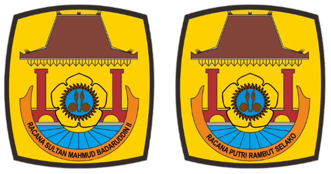
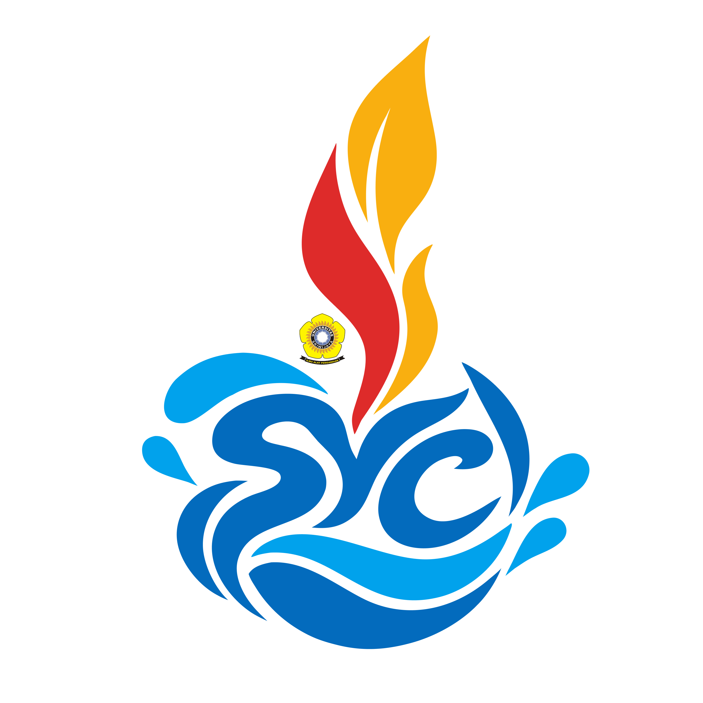

OPEN RECRUITMENT VOLUNTEER PANITIA
SANDI YUDHA
COMPETITION 2026
Racana Sultan Mahmud Badaruddin II
Racana Putri Rambut Selako
Saatnya ambil peran dan menjadi bagian dari perjalanan besar Sandi Yudha Competition 2026!
PENGUMUMAN VOLUNTEER TERPILIH
Terima kasih atas antusiasme dan partisipasi luar biasa dari seluruh pendaftar. Kami ucapkan SELAMAT kepada para volunteer yang terpilih untuk menjadi bagian dari panitia Sandi Yudha Competition 2026!
TIMELINE & ALUR SELEKSI
Catat tanggal krusial berikut agar tidak terlewat setiap tahapan seleksinya.
Pendaftaran Berkas
23 - 28 September 2026
Registrasi daring dan pengunggahan berkas biodata melalui formulir resmi panitia.
Wawancara & Seleksi
30 September 2026
Sesi interview daring/luring bersama koordinator divisi dan pengurus rekrutmen panitia inti.
Pengumuman Kelulusan
01 Oktober 2026
Pengumuman hasil akhir volunteer terpilih melalui Instagram & broadcast resmi.
First Gathering
Menuju SYC 2026
Temu perdana, koordinasi pembagian jobdesc divisi, dan orientasi panitia bersama.